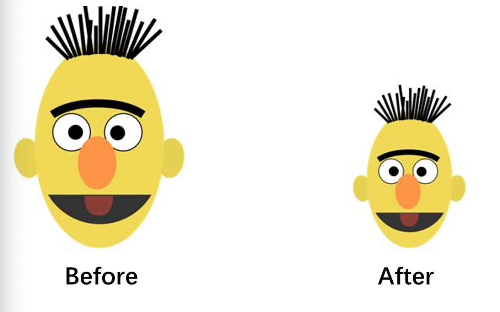
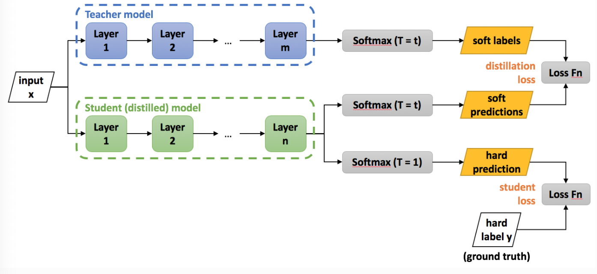
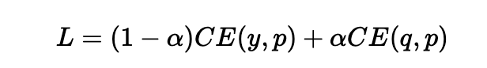

知识蒸馏的概念介绍¶
学习目标
- 理解什么是模型的知识蒸馏.

1.什么是模型蒸馏¶
在工业级的应用中, 除了要求模型要有好的预测效果之外, 往往还希望它的"消耗"足够小. 也就是说一般希望部署在线上的应用模型消耗较小的资源. 这些资源包括存储空间, 包括算力.
在深度学习背景下, 如果希望模型的效果足够好, 通常会有两种方案: * 使用更大规模的参数. * 使用集成模型, 将多个弱模型集成起来.
注意: 上面两种方案往往需要较大的计算资源, 对部署非常不利. 由此产生了模型压缩的动机: 我们希望有一个小模型, 但又能达到大模型一样或相当的效果.
模型蒸馏是一种通过将一个复杂模型（教师模型）的知识转移给一个简单模型（学生模型）的方法，以提高学生模型的性能。在减小模型体积的同时，保持或提升模型性能。 * 知识蒸馏的概念最早由Hinton在2015年提出, 在2019年后火热起来. * 知识蒸馏在目前已经成为一种既前沿又常用的提高模型泛化能力和部署优势的方法.
2.知识蒸馏的原理和算法¶
2.1 教师模型¶
- 定义： 复杂的、高性能的模型，通常是大型深度神经网络。
- 特点： 参数量大，能够学习复杂的特征和关系。
2.2 学生模型¶
- 定义： 简化的、小型的模型，通常是教师模型的子集。
- 特点： 参数量较小，适用于资源受限的场景。
2.3 蒸馏过程¶
下图非常直观, 又经典的展示了知识蒸馏的架构图, 相当于有两部分的分支: * 一部分是大模型的softmax分布作为"知识标签", 让小模型去学习. * 一部分是真实label(ground truth)作为"真实标签", 让小模型去匹配.

我们对知识蒸馏进行公式化处理: 先训练好一个精度较高的Teacher网络(一般是复杂度较高的大规模预训练模型), 然后将Teacher网络的预测结果q作为Student网络的"学习目标", 来训练Student网络(一般是速度较快的小规模模型), 最终使得Student网络的结果p接近于q. 损失函数如下:

- 上式中CE是交叉熵(Cross Entropy), y是真实标签, q是Teacher网络的输出结果, p是Student网络的输出结果.
原始论文中提出了softmax-T公式来计算上图中的q:
- 上式中pi是Student网络学习的对象, 也就是所谓的软目标(soft targets), zi是神经网络softmax前的输出logits.
不同的温度系数T值, 对softmax-T算法有不同的影响, 总结如下: * 如果将T值取1, softmax-T公式就成为softmax公式, 根据logits输出各个类别的概率. * 如果T越接近于0, 则最大值会越接近1, 其他值会接近0, 类似于退化成one-hot编码. * 如果T越大, 则输出的结果分布越平缓, 相当于标签平滑的原理, 起到保留相似信息的作用. * 如果T趋于无穷大, 则演变成均匀分布.